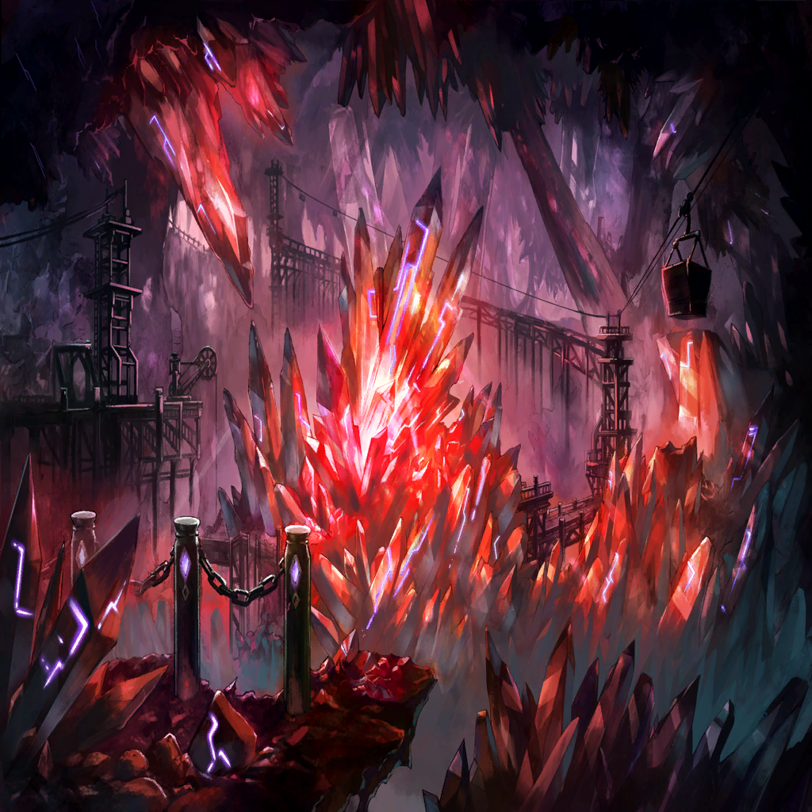

|
|  |
| シュメイア |
オォォォォォォォォ!! |
| 名も無き竜 |
エサイ様…！ これ以上は…!! |
| エサイ・イグナシオ |
ああ、わかっている
が、その前に―― |
| シュメイア |
…！ いけない！ |
| シュメイア |
今の銃撃で、
この地下空洞の支柱を砕かれた…！ |
| シュメイア |
脱出は―― |
| エイデス |
………… |
| カルネ |
………… |
| ならず者たち |
………… |

マティア |
………… |
| シュメイア |
…ここにいる全員を、
地上に逃がすのは無理。なら―― |
| シュメイア |
――我が竜界が操るのは重さ
軽重自在の質量こそが、僕の法則
ならば…！ |
| シュメイア |
この地盤の重さを限りなく軽くして
無理矢理、“空”への穴を開ける…!! |
 |
 |
| シュメイア |
いたたたたたたっ!? |
マティア |
大人しくしなさい、シュメイア
今、軟膏を塗っていますから… |
| シュメイア |
命の恩人！ 僕は命の恩人だからね!?
もうちょっと優しさを見せて欲しい…！ |
マティア |
はい、これでいいですよ
…まったく |
マティア |
脱出の為だけに
地盤に穴を開けるだなんて…
さすがは竜の偉業とも言えますが |
マティア |
“久しぶりに全力出したから筋肉痛”は
さすがに情けないのではないですか… |
| シュメイア |
いや、まあ…この百年は
ずっと研究ばっかりしてたからね… |
マティア |
あの男。エサイと言いましたか
おそらく、また来ますよ |
| シュメイア |
だろうね |
マティア |
次は、こうはいかないかもしれません |
| シュメイア |
それはそう |
マティア |
なら、どうしてそんなに暢気なのです |
| シュメイア |
まあ、そこはなんとかするさ
ちょうど、
“頼もしい仲間”もできたことだしね |
 |
| エイデス |
っ痛ぅ… |
| カルネ |
エイデス、お腹の傷。痛む？ |
| エイデス |
ああ、気にすんな
この程度で死ぬんなら、
俺ぁとっくの昔に死んでるさ |
| カルネ |
でも、本当にあの竜に協力するの？
シュメイア、だっけ |
| エイデス |
ああ、イグナシオのほうには
裏切られたからな |
| エイデス |
俺たち怠惰の民が生き残るには、
もう、あの女を頼るしか道はねえ |
| エイデス |
竜の技術による、都市環境の改善か
できるもんなら、
やってもらおうじゃねえか |
| カルネ |
…わたしは、今の街も好きだけど |
| エイデス |
…それでも、
変わっていかなきゃ生き残れねえ
それが、今のこの世界なんだよ。俺の天使 |
| カルネ |
…エイデスが、そう言うなら |
| エイデス |
もう遅ぇから、ちゃんと歯を磨いて寝な
あと、家ではエイデスじゃなくて
ちゃんとお父さんと呼べ。お父さんと |
| カルネ |
う、うん…おやすみ。お父さん |
| エイデス |
…娘に殺しをさせる親か
クズだよなぁ… |
| エイデス |
だが俺たち、寄る辺なき民が生き残るには
こうするしかねえ |
| エイデス |
誰を裏切って、誰に裏切られて
何度、泥水をすすることになろうと…
生き残りさえすれば、俺たちの勝ちだ |
| エイデス |
だが… |
| エイデス |
エサイ・イグナシオ
あの男はなんで、あの時――
俺の急所を外しやがった？ |
 |
| エサイ・イグナシオ |
…戻ったか、シャヘル |

シャヘル |
はい。培養層から五十番台の個体を
ロールアウトしました |
シャヘル |
しかし、よろしかったのですか？ |
| エサイ・イグナシオ |
何がだい？ |
シャヘル |
シュメイア様のことです
地上に控えていたこちらの“最大戦力”を
動員すれば、回収は可能な計算でしたが |
| エサイ・イグナシオ |
それでは、意味がない |
| エサイ・イグナシオ |
シュメイア様には、オピネウス様と同様
真の意味で“罪竜”として覚醒していただく |
| エサイ・イグナシオ |
その為には、あの場は少々…
絶望が薄すぎた |
| エサイ・イグナシオ |
シュメイア様は素晴らしい方だ
慈悲があり、人に優しく――
だからこそ、失った時の絶望は深くなる… |
| エサイ・イグナシオ |
怠惰の層の民はその為の――
贄になってもらうとしよう |
シャヘル |
…承知いたしました |
| エサイ・イグナシオ |
…この層にも、ヒトの穢れは迫っている
時間はあまり残されていないようだよ？
オピネウス… |